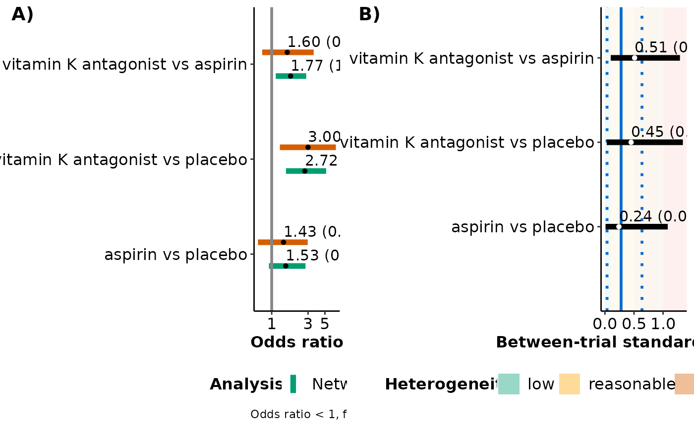

End-user-ready results for a series of pairwise meta-analyses
Source:R/series.meta.plot_function.R
series_meta_plot.RdFacilitates the comparison of the consistency model
(via run_model) with a series of pairwise meta-analyses
(via run_series_meta) regarding the estimated summary effect
sizes and between-trial standard deviation for comparisons with at
least two trials.
Arguments
- full
- meta
An object of S3 class
run_series_meta. See 'Value' inrun_series_meta.- drug_names
A vector of labels with the name of the interventions in the order they appear in the argument
dataofrun_model. Ifdrug_namesis not defined, the order of the interventions as they appear indatais used, instead.- save_xls
Logical to indicate whether to export the tabulated results to an 'xlsx' file (via the
write_xlsxfunction of the R-package writexl) at the working directory of the user. The default isFALSE(do not export).
Value
The R console prints the data-frame with the estimated summary effect sizes and between-trial standard deviation of comparisons under both models. The comparisons have at least two trials. In the case of a fixed-effect model, the data-frame is printed without the results on the between-trial standard deviation.
Furthermore, series_meta_plot exports the data-frame to an 'xlsx'
file at the working directory of the user.
series_meta_plot returns a panel of two forest plots: (1) a
forest plot on the posterior median and 95% credible interval of the summary
effect size for the observed comparisons from network meta-analysis and the
corresponding pairwise meta-analyses, and (2) a forest plot on the
posterior median and 95% credible interval of the between-trial standard
deviation for these observed comparisons. The estimated median and 95%
credible intervals of the between-trial standard deviation from network
meta-analysis appear in the forest plot as a solid and two dotted parallel
blue lines, respectively. The different levels of heterogeneity appear as
green, yellow, orange, and red rectangles to indicate a low, reasonable,
fairly high, and fairly extreme heterogeneity, respectively, following the
classification of Spiegelhalter et al. (2004).
When a fixed-effect model has been fitted, only the forest plot on the
estimated summary effect sizes is shown.
Details
series_meta_plot can be used only for a network of
interventions. Otherwise, the execution of the function will be stopped and
an error message will be printed on the R console.
For a binary outcome, when measure is "RR" (relative risk) or "RD"
(risk difference) in run_model, series_meta_plot
currently presents the results in the odds ratio for being the
base-case effect measure in run_model for a binary
outcome (see also 'Details' in run_model).
The user can detect any inconsistencies in the estimated effects from the compared models and explore the gains in precision stemming from applying network meta-analysis. Furthermore, the user can investigate the plausibility of the common between-trial heterogeneity assumption which is typically considered in network meta-analysis.
References
Spiegelhalter DJ, Abrams KR, Myles JP. Bayesian approaches to clinical trials and health-care evaluation. John Wiley and Sons, Chichester, 2004.
Examples
data("nma.dogliotti2014")
# Read results from 'run_model' (using the default arguments)
res <- readRDS(system.file('extdata/res_dogliotti.rds', package = 'rnmamod'))
# Read results from 'run_series_meta' (using the default arguments)
meta <- readRDS(system.file('extdata/meta_dogliotti.rds',
package = 'rnmamod'))
# The names of the interventions in the order they appear in the dataset
interv_names <- c("placebo", "aspirin", "aspirin plus clopidogrel",
"dabigatran 110 mg", "dabigatran 150 mg", "rivaroxaban",
"vitamin K antagonist", "apixaban")
# Plot the results from both models
series_meta_plot(full = res,
meta = meta,
drug_names = interv_names)
#> $tabulated_results
#>
#>
#> Table: Estimation for each observed comparison
#>
#> |Comparison |Median NMA |SD NMA |95% CrI NMA |Median MA |SD MA |95% CrI MA |Median tau |SD tau |95% CrI tau |
#> |:-------------------------------|:----------|:------|:-------------|:---------|:-----|:-------------|:----------|:------|:------------|
#> |aspirin vs placebo |1.53 |0.27 |(0.92, 2.78) |1.43 |0.37 |(0.66, 2.97) |0.24 |0.28 |(0.01, 1.08) |
#> |vitamin K antagonist vs placebo |2.72 |0.30 |(1.54, 5.19)* |3.00 |0.42 |(1.28, 6.96)* |0.45 |0.34 |(0.03, 1.34) |
#> |vitamin K antagonist vs aspirin |1.77 |0.23 |(1.13, 2.84)* |1.60 |0.39 |(0.75, 3.56) |0.51 |0.30 |(0.10, 1.29) |
#>
#> $forest_plots

#>